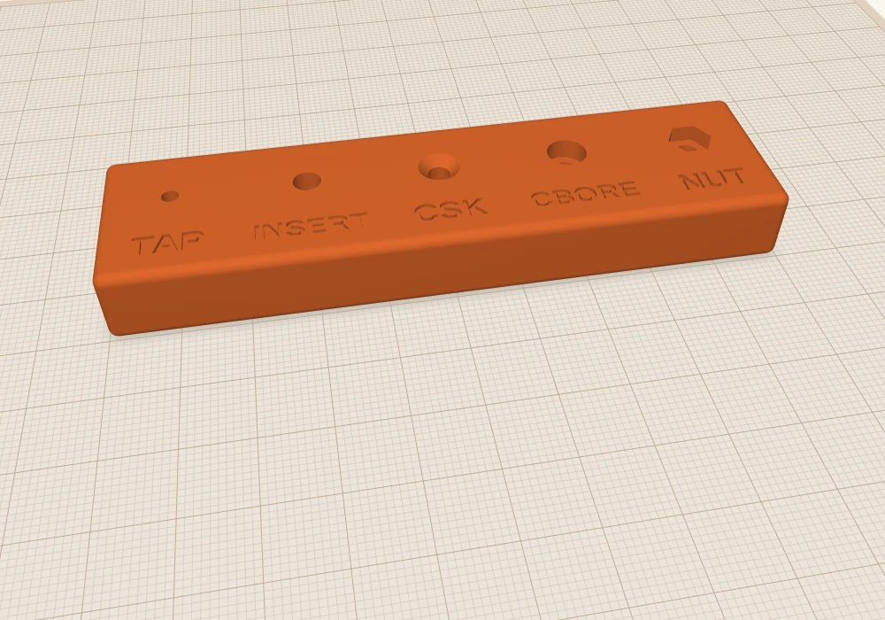
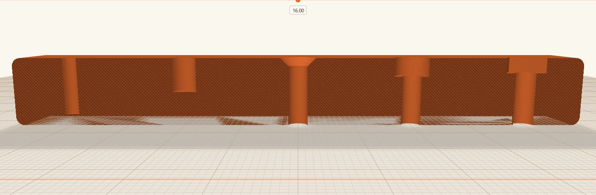
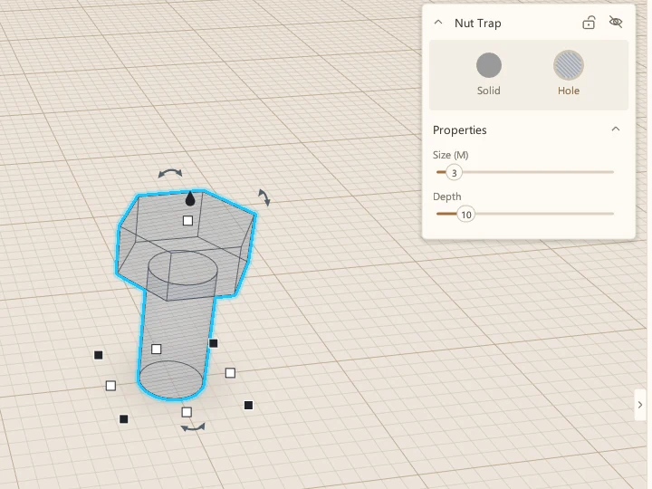
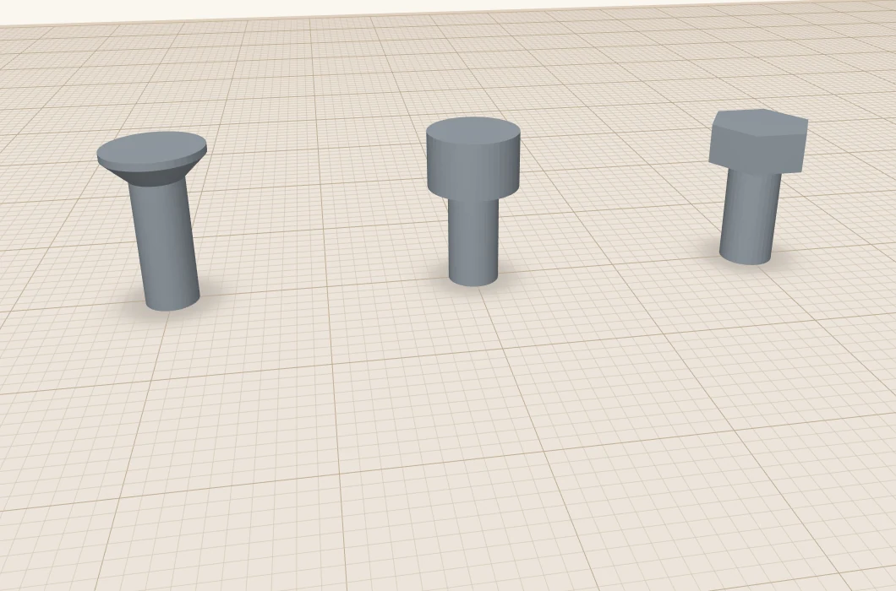

Screws in 3D prints: inserts and nut traps
Functional 3D prints often use hardware to secure the pieces together. It's common for makers to use self-tapping screws, but there are other techniques such as heat-set thread inserts and nut traps. This post outlines the techniques I use in my functional prints.
I'm a functional maker: I make a lot of project boxes. This usually leads me to screw a PC board down to a box or to screw down the lid to the box itself. Sometimes for printability I will subdivide my projects into several pieces and screw them together. Doing so can make for a stronger print, allow you to build something that wouldn't fit your print volume, or allow you to minimise overhangs and supports. In this post I'm going to describe several techniques for using screws and other hardware with your 3D prints.
Here are the five I use, all in one test block so you can see them side by side. Everything here is for metric machine screws, and the sizes are for M3, the one I use most.

Here's the same block cut open with section view (Shift+K), so you can see the shape of each hole.

1. Let the screw cut its own thread
The simplest way. Make a hole a bit smaller than the screw, and the screw cuts its own thread into the plastic as you drive it in. No extra parts. One disadvantage here is that you have to get the hole size right. Too small and the screw is hard to drive in and can split the plastic. Too big and it will strip and pull out easily.
For M3 I use a 2.5 mm hole. It's a hole cylinder, nothing fancier. This is what the project box uses for its lid screws.
It's good for things you put together once, or only now and then. Each time you take the screw out and put it back, the thread in the plastic wears a little, so it isn't the right choice for a lid you open every week.
2. Heat-set inserts
A heat-set insert is a small brass sleeve with a thread inside and knurls outside. You print a hole a little smaller than the insert, then press it in with a soldering iron. The brass melts its way in, the plastic flows round the knurls, and you've got a proper metal thread that you can screw into again and again.
For M3 inserts the hole is usually around 4 to 4.2 mm, and a bit deeper than the insert. This is what I'd use for anything I'll open a lot, and it's an option in the Raspberry Pi mounts.
You'll need to measure your inserts yourself, though, because sizes vary a lot between makers. I quote the common 4 to 4.2 mm here, but I have some M3 inserts I got on eBay that need a 5.2 mm hole. That's the downside of inserts: they need a bigger hole, and more plastic round it, than a plain screw. Sometimes you just don't have room.
To set the inserts I use my temperature-controlled soldering iron, set to 270 °C for PETG, the material I use most often for functional prints. I don't use any kind of special tip. A conical tip that's small enough to fit inside the insert is good enough. Rest the insert on the hole, put the tip in it, and press gently. The iron's weight on its own often isn't quite enough, but don't force it. Let the brass heat up and sink in straight until it's flush with the surface.
3. Countersunk holes
That's the screw side. On the part the screw goes through, you want a clearance hole, a little bigger than the screw so it slides through without threading. For a flat-head screw you also want a cone at the top so the head sits flush.
ScottiCAD has a Countersunk Hole shape that does both. Search for "countersink", drop it in, and set Size (M) to your screw. For M3 it makes a 3.4 mm hole with a 90° cone up to 6.4 mm.
4. Counterbored holes
A counterbore is the same idea for a socket-head cap screw: a flat-bottomed pocket so the round head sits below the surface. The Counterbored Hole shape makes it. For M3 that's a 3.4 mm hole with a 6.1 mm pocket, 3.3 mm deep.
5. Nut traps
When the screw goes all the way through, you need a nut on the other side. A nut trap is a hex-shaped pocket that holds the nut so it can't spin, and you can tighten the screw from one side.
The Nut Trap shape is a hex pocket on top of a clearance hole. For M3 the pocket is 6.1 mm across the flats and 2.7 mm deep, just bigger than the nut. Put the pocket on a top surface, open side up, and the nut drops in.

These three shapes are holes, but they're easier to understand as solids:

The sizes I start from
| M2.5 | M3 | M4 | |
|---|---|---|---|
| Pilot hole, self-tapping | 2.2 | 2.5 | 3.4 |
| Clearance hole (ScottiCAD's shapes) | 2.9 | 3.4 | 4.4 |
| Heat-set insert hole, typical | about 3.6 | about 4.2 | about 5.6 |
| Heat-set insert hole, my eBay ones | about 4.0 | about 5.2 | about 5.9 |
| Nut trap, across the flats | 5.6 | 6.1 | 7.6 |
| Nut trap, depth | 2.3 | 2.7 | 3.5 |
All in mm. These are starting points, not guarantees. Measure your inserts, and remember that every printer prints holes a little differently, usually a touch small.
Print a test block first
That's why I'd print a little test block before committing to a big part. It takes a few minutes and a few grams of filament, and it tells you whether your printer's holes come out the size you asked for. If a screw won't go in or spins freely, change the size and print another.
Here's mine, the one in the pictures: m3-test-block.scotticad. Open it, check it against your screws, and change the holes to suit.
A few more things I've learned:
- Leave enough plastic round the screw. For a self-tapping screw, I make the post around three times the screw's size across, so a 9 mm post for M3. Too thin and it splits.
- Print holes upright where you can. A hole printed standing up comes out round. A hole printed lying on its side sags at the top.
- Don't over-tighten. Plastic isn't steel. Snug is enough.
More from Scotti's Corner
- Your first ScottiCAD script 30 October 2026
- Putting text on your 3D prints 30 October 2026
- Three tools for people who actually print 30 October 2026
- Raspberry Pi mounts that line up the first time 25 October 2026
- How I build a project box 24 October 2026